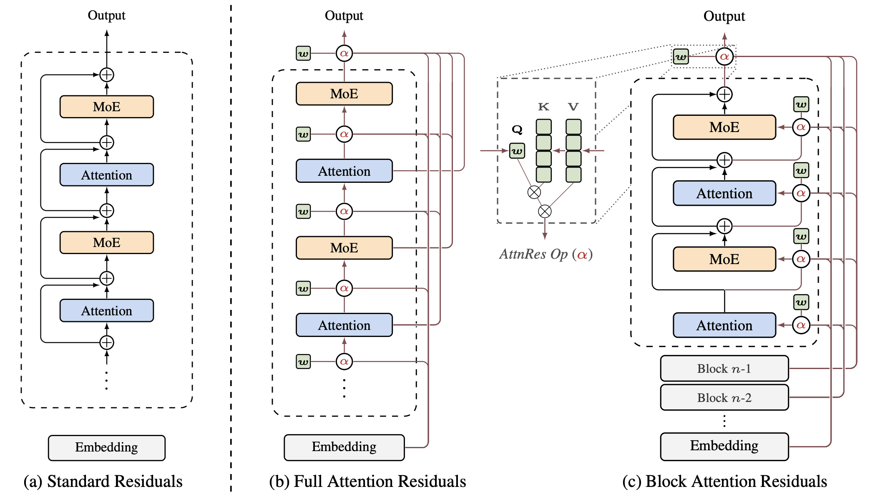

THE FRONT PAGE
EDITOR'S NOTE: As we trade the rigorous architecture of the past for proprietary black boxes and safety harnesses that barely fit, one wonders if we are still building tools or simply negotiating the terms of our surrender to the statistical average. #The institutionalization of unverified algorithmic authority.

While modern scaling often treats model depth as a black box, these findings suggest that the specific geometry of attention residuals dictates whether a network maintains structural integrity or dissolves into numerical noise. The tradeoff is a familiar one: gains in training stability usually come at the cost of the expressive flexibility needed for truly novel generalization.
By framing the Transformer architecture as a Bayesian network, researchers are stripping away the magic of 'emergent' behavior to reveal a rigorous, albeit rigid, statistical grounding. This clarity comes at the cost of acknowledging that our scaling efforts might just be extremely efficient density estimation rather than the spark of synthetic reason.
An obscure dataset of a Bangkok pedicab driver’s routes, conversations, and fare haggling was quietly folded into a major LLM’s latest fine-tuning cycle, raising questions about the unchecked absorption of hyper-local, unconsented labor into ‘general intelligence.’ The model now overfits on Thai bargaining slang, while the driver remains unaware his decade of work fuels a system he’ll never access.
An independent developer released an open-source tool visualizing 'dark fleet' vessel movements near Baltic subsea cables—useful for infrastructure operators but raising questions about adversarial exploitation of public AIS data. The project’s raw utility contrasts with its reliance on unvalidated transponder signals, a known blind spot for maritime security.
OpenCode’s new open-source coding agent enters a field dominated by proprietary giants, trading polished integration for transparency—and betting that developers will tolerate rough edges for control over their tools. The real test isn’t capability, but whether the ecosystem can resist re-centralization under corporate ‘contributions.’
A new static analysis tool, RustCC, retrofits Rust’s borrow-checker logic onto C++17 via policy enforcement, promising memory safety without rewrites—but early adopters report build-time overhead climbing past 30% on legacy codebases. The tradeoff is stark: security through friction, or the usual chaos with speed.
As the commercial web dissolves into an ocean of synthetic noise, 'The Social Smolnet' advocates for a return to text-only, asynchronous protocols. It trades the dopamine-hit of real-time interaction for a deliberate, offline-first discipline that protects the engineer's focus but risks deep social isolation.
The integration of Alibaba's latest weights with high-bandwidth unified memory provides a functional, air-gapped surveillance stack, though the trade-off remains a significant thermal tax on sustained inference. It is a quiet pivot back toward hardware ownership, even if the software craft underneath continues to favor scale over elegance.
This open-source implementation of the Saab Viggen’s central computer offers a rare look at a time when hardware constraints forced an elegance now largely absent in our bloated modern stacks. While the project is a masterclass in digital preservation, the transition from discrete components to high-level synthesis risks losing the physical timing nuances that defined early mission-critical reliability.
MODEL RELEASE HISTORY
No confirmed model releases were detected for this edition date.